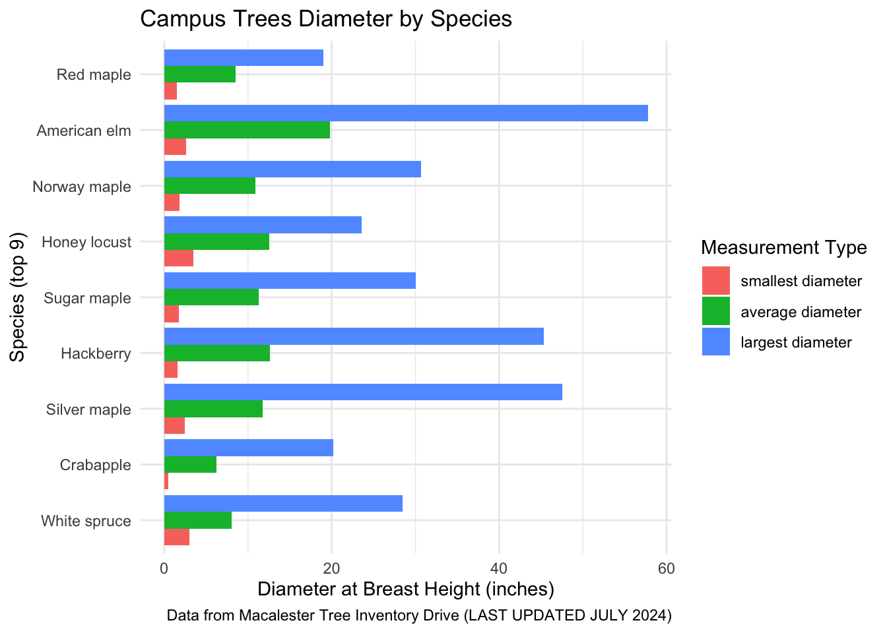

Shaylee’s EDA
[1] 953 14# A tibble: 6 × 14
...1 OBJECTID GlobalID CreationDate Creator Memorial `Is it a memorial?`
<dbl> <dbl> <chr> <chr> <chr> <chr> <chr>
1 1 2 70206b04-daf… 12/15/2023 … mfrazi… Jimm Cr… Yes
2 2 3 27e58137-b13… 12/15/2023 … mfrazi… <NA> No
3 3 4 936e7fa1-1ed… 12/15/2023 … mfrazi… <NA> No
4 4 5 0e5a8bf0-045… 12/15/2023 … mfrazi… <NA> No
5 5 7 34eae6c7-a2a… 12/20/2023 … mfrazi… <NA> No
6 6 8 8611c519-ed2… 12/20/2023 … mfrazi… <NA> No
# ℹ 7 more variables: `Diameter at Breast Heigh (DBH)` <dbl>,
# `Common Species Name` <chr>, `Height (ft)` <dbl>, SPECIES <chr>,
# SPECIES_BIN <chr>, x <dbl>, y <dbl># A tibble: 6 × 14
...1 OBJECTID GlobalID CreationDate Creator Memorial `Is it a memorial?`
<dbl> <dbl> <chr> <chr> <chr> <chr> <chr>
1 948 1937 c24971db-9e5… 8/15/2024 9… <NA> <NA> <NA>
2 949 1938 9a073201-cd4… 8/15/2024 9… <NA> <NA> <NA>
3 950 1939 b843bc49-948… 8/15/2024 9… <NA> <NA> <NA>
4 951 1940 e333202d-b39… 8/15/2024 9… <NA> <NA> <NA>
5 952 1941 153b1ff3-304… 8/15/2024 9… <NA> <NA> <NA>
6 953 1942 0b8ad409-cfd… 8/17/2024 1… <NA> <NA> <NA>
# ℹ 7 more variables: `Diameter at Breast Heigh (DBH)` <dbl>,
# `Common Species Name` <chr>, `Height (ft)` <dbl>, SPECIES <chr>,
# SPECIES_BIN <chr>, x <dbl>, y <dbl># A tibble: 67 × 2
SPECIES n
<chr> <int>
1 White spruce 100
2 Crabapple 78
3 Silver maple 66
4 Hackberry 65
5 Sugar maple 64
6 Honey locust 55
7 Norway maple 54
8 American elm 31
9 Red maple 31
10 Eastern redbud 27
# ℹ 57 more rows# A tibble: 67 × 2
SPECIES n
<chr> <int>
1 White spruce 100
2 Crabapple 78
3 Silver maple 66
4 Hackberry 65
5 Sugar maple 64
6 Honey locust 55
7 Norway maple 54
8 American elm 31
9 Red maple 31
10 Eastern redbud 27
# ℹ 57 more rows# A tibble: 5 × 2
SPECIES n
<chr> <int>
1 White spruce 100
2 Crabapple 78
3 Silver maple 66
4 Hackberry 65
5 Sugar maple 64The top five most common tree SPECIES on campus are : White spruce - 100, Crabapple - 78, Silver maple - 66, Hackberry - 65, Sugar maple - 64.
then, top 10 are : Honey locust - 55 Norway maple - 54 American elm - 31 Red maple - 31 Eastern redbud - 27
Why is it that these trees are most common on campus? 100 White spruce is a lot of one tree. Does the sizing of the trees play any role in this? Because it is possible that if a tree species is very small than it could skew the number of them that are planted on campus because they take up lots of or very little room.
Code
# A tibble: 1 × 3
smallest medium largest
<dbl> <dbl> <dbl>
1 0.2 9.98 57.8Code
# A tibble: 10 × 2
`Diameter at Breast Heigh (DBH)` SPECIES
<dbl> <chr>
1 57.8 American elm
2 47.6 Northern catalpa
3 47.5 Silver maple
4 45.3 Hackberry
5 45 Silver maple
6 44.5 American elm
7 44 Hackberry
8 43.2 Green ash
9 42.7 Northern catalpa
10 40.5 American elm Code
tibble [9 × 4] (S3: tbl_df/tbl/data.frame)
$ SPECIES : chr [1:9] "American elm" "Crabapple" "Hackberry" "Honey locust" ...
$ smallest diameter: num [1:9] 2.62 0.5 1.6 3.5 1.83 1.54 2.44 1.78 3
$ average diameter : num [1:9] 19.77 6.25 12.61 12.55 10.91 ...
$ largest diameter : num [1:9] 57.8 20.2 45.3 23.6 30.7 ...Code
ggplot(sum_top_9_long,aes(x= SPECIES, y = Diameter, fill = Type))+
geom_col(position = position_dodge())+
coord_flip()+
labs(title ="Campus Trees Diameter by Species", x = "Species (top 9)", y = "Diameter at Breast Height (inches)", fill = "Measurement Type", caption = "Data from Macalester Tree Inventory Drive (LAST UPDATED JULY 2024)")+
theme_minimal()
# A tibble: 38 × 2
SPECIES Memorial
<chr> <chr>
1 Japanese maple Jimm Crowder
2 American sycamore Reid McLean ‘72
3 Sugar maple Paul Pellowski
4 White oak Entrepreneurship and Career Task Forces 2018-2022
5 Crabapple James Wallace Heritage Society
6 White oak Marissa Shu-Hui Leow
7 Norway maple Dr. O.T. Walter
8 Red pine Jimm Crowder
9 Blue spruce David S. Taylor: Allan ‘59 and Emily ‘60 Clark Taylor
10 Sugar maple Roger L. Sempel, Class of 1967
# ℹ 28 more rows38 tree memorials!
Code
# A tibble: 27 × 2
SPECIES Memorials
<chr> <chr>
1 American basswood Sarah Katherine Smith
2 American elm Martha McIlhany Kendall, Grace M. Hill, Shannon Katherine …
3 American hornbeam Marshall Simone ‘16
4 American sycamore Reid McLean ‘72
5 Black maple Armin Herbert Steinhauser
6 Blue spruce David S. Taylor: Allan ‘59 and Emily ‘60 Clark Taylor
7 Bur oak Calvin J. Roetzel
8 Crabapple James Wallace Heritage Society
9 Eastern redbud Henry R. West, member of Macalester’s Philosophy Departmen…
10 Fringetree Gary Zahrbock
# ℹ 17 more rowsSugar maple - 5 memorials white oak - 3 memorials Ohio buckeye - 3 American Elm - 3 blue spruce - 3
|
| | 0%
|
|. | 2%
|
|.. | 5% [global_options]
|
|... | 7%
|
|.... | 10% [introduce]
|
|.... | 12%
|
|..... | 14% [plot_intro]
|
|...... | 17%
|
|....... | 19% [data_structure]
|
|........ | 21%
|
|......... | 24% [missing_profile]
|
|.......... | 26%
|
|........... | 29% [univariate_distribution_header]
|
|........... | 31%
|
|............ | 33% [plot_histogram]
|
|............. | 36%
|
|.............. | 38% [plot_density]
|
|............... | 40%
|
|................ | 43% [plot_frequency_bar]
|
|................. | 45%
|
|.................. | 48% [plot_response_bar]
|
|.................. | 50%
|
|................... | 52% [plot_with_bar]
|
|.................... | 55%
|
|..................... | 57% [plot_normal_qq]
|
|...................... | 60%
|
|....................... | 62% [plot_response_qq]
|
|........................ | 64%
|
|......................... | 67% [plot_by_qq]
|
|.......................... | 69%
|
|.......................... | 71% [correlation_analysis]
|
|........................... | 74%
|
|............................ | 76% [principal_component_analysis]
|
|............................. | 79%
|
|.............................. | 81% [bivariate_distribution_header]
|
|............................... | 83%
|
|................................ | 86% [plot_response_boxplot]
|
|................................. | 88%
|
|................................. | 90% [plot_by_boxplot]
|
|.................................. | 93%
|
|................................... | 95% [plot_response_scatterplot]
|
|.................................... | 98%
|
|.....................................| 100% [plot_by_scatterplot]
/Applications/RStudio.app/Contents/Resources/app/quarto/bin/tools/x86_64/pandoc +RTS -K512m -RTS /Users/shayleeogrady/Desktop/project-missing-information/src/appx/report.knit.md --to html4 --from markdown+autolink_bare_uris+tex_math_single_backslash --output /Users/shayleeogrady/Desktop/project-missing-information/src/appx/report.html --lua-filter /Library/Frameworks/R.framework/Versions/4.4-x86_64/Resources/library/rmarkdown/rmarkdown/lua/pagebreak.lua --lua-filter /Library/Frameworks/R.framework/Versions/4.4-x86_64/Resources/library/rmarkdown/rmarkdown/lua/latex-div.lua --embed-resources --standalone --variable bs3=TRUE --section-divs --table-of-contents --toc-depth 6 --template /Library/Frameworks/R.framework/Versions/4.4-x86_64/Resources/library/rmarkdown/rmd/h/default.html --no-highlight --variable highlightjs=1 --variable theme=yeti --mathjax --variable 'mathjax-url=https://mathjax.rstudio.com/latest/MathJax.js?config=TeX-AMS-MML_HTMLorMML' --include-in-header /var/folders/tn/lr5vxxrn68d2l_9hlsp8221h0000gn/T//RtmpCiv0c8/rmarkdown-str5cb912b0db1e.html